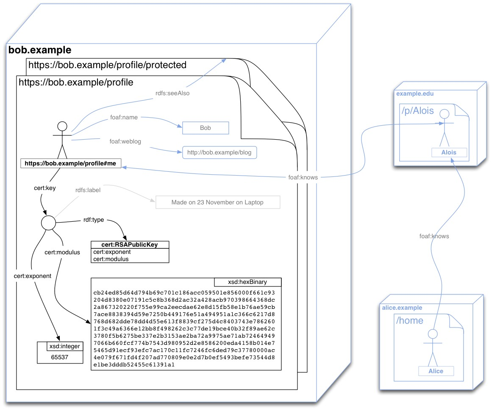

2.1 The certificate
The Key Chain must have a Certificate with a Subject Alternative Name URI entry.
This URI must be one that dereferences to a document the user controls so that he can publish the
public key for that Certificate at this URI.
For example, if a user Bob controls https://bob.example/profile,
then his WebID can be https://bob.example/profile#me
When creating a certificate it is very important to choose a user friendly Common Name (CN) for the user, that will allow him to distinguish between different certificates he may have, such as a personal or a business certificate, when selecting one from his browser.
In the example below the CN is Bob (personal).
This name can then also be displayed by any server authenticating the user as a human friendly label.
The WebID URL itself should not usually be used as a visible identifier for human users, rather it should be thought of as a hyperlink in an <a href="https://..."> anchor.
That is the CN should be a label and the WebID a pointer.
As an example to use throughout this specification here is the
following certificate as an output of the openssl program.
Certificate:
Data:
Version: 3 (0x2)
Serial Number:
5f:df:d6:be:2c:73:c1:fb:aa:2a:2d:23:a6:91:3b:5c
Signature Algorithm: sha1WithRSAEncryption
Issuer: O=FOAF+SSL, OU=The Community of Self Signers, CN=Not a Certification Authority
Validity
Not Before: Jun 8 14:16:14 2010 GMT
Not After : Jun 8 16:16:14 2010 GMT
Subject: O=FOAF+SSL, OU=The Community Of Self Signers, CN=Bob (Personal)
Subject Public Key Info:
Public Key Algorithm: rsaEncryption
Public-Key: (2048 bit)
Modulus:
00:cb:24:ed:85:d6:4d:79:4b:69:c7:01:c1:86:ac:
c0:59:50:1e:85:60:00:f6:61:c9:32:04:d8:38:0e:
07:19:1c:5c:8b:36:8d:2a:c3:2a:42:8a:cb:97:03:
98:66:43:68:dc:2a:86:73:20:22:0f:75:5e:99:ca:
2e:ec:da:e6:2e:8d:15:fb:58:e1:b7:6a:e5:9c:b7:
ac:e8:83:83:94:d5:9e:72:50:b4:49:17:6e:51:a4:
94:95:1a:1c:36:6c:62:17:d8:76:8d:68:2d:de:78:
dd:4d:55:e6:13:f8:83:9c:f2:75:d4:c8:40:37:43:
e7:86:26:01:f3:c4:9a:63:66:e1:2b:b8:f4:98:26:
2c:3c:77:de:19:bc:e4:0b:32:f8:9a:e6:2c:37:80:
f5:b6:27:5b:e3:37:e2:b3:15:3a:e2:ba:72:a9:97:
5a:e7:1a:b7:24:64:94:97:06:6b:66:0f:cf:77:4b:
75:43:d9:80:95:2d:2e:85:86:20:0e:da:41:58:b0:
14:e7:54:65:d9:1e:cf:93:ef:c7:ac:17:0c:11:fc:
72:46:fc:6d:ed:79:c3:77:80:00:0a:c4:e0:79:f6:
71:fd:4f:20:7a:d7:70:80:9e:0e:2d:7b:0e:f5:49:
3b:ef:e7:35:44:d8:e1:be:3d:dd:b5:24:55:c6:13:
91:a1
Exponent: 65537 (0x10001)
X509v3 extensions:
X509v3 Basic Constraints: critical
CA:FALSE
X509v3 Key Usage: critical
Digital Signature, Non Repudiation, Key Encipherment, Key Agreement
Netscape Cert Type:
SSL Client, S/MIME
X509v3 Subject Key Identifier:
08:8E:A5:5B:AE:5D:C3:8B:00:B7:30:62:65:2A:5A:F5:D2:E9:00:FA
X509v3 Subject Alternative Name: critical
URI:https://bob.example/profile#me
Signature Algorithm: sha1WithRSAEncryption
cf:8c:f8:7b:b2:af:63:f0:0e:dc:64:22:e5:8a:ba:03:1e:f1:
ee:6f:2c:f5:f5:10:ad:4c:54:fc:49:2b:e1:0d:cd:be:3d:7c:
78:66:c8:ae:42:9d:75:9f:2c:29:71:91:5c:29:5b:96:ea:e1:
e4:ef:0e:5c:f7:07:a0:1e:9c:bf:50:ca:21:e6:6c:c3:df:64:
29:6b:d3:8a:bd:49:e8:72:39:dd:07:07:94:ac:d5:ec:85:b1:
a0:5c:c0:08:d3:28:2a:e6:be:ad:88:5e:2a:40:64:59:e7:f2:
45:0c:b9:48:c0:fd:ac:bc:fb:1b:c9:e0:1c:01:18:5e:44:bb:
d8:b8
Should we formally require the Issuer to be
O=FOAF+SSL, OU=The Community of Self Signers, CN=Not a Certification Authority.
This was discussed on the list as allowing servers to distinguish certificates
that are foaf+SSL enabled from others. Will probably need some very deep TLS
thinking to get this right.
The above certificate is no longer valid, as I took an valid
certificate and change the time and WebID. As a result the signature is now
false. A completely valid certificate should be generated to avoid nit-pickers
picking nits.
2.1.1 Creating a Certificate
Many tools exist to create a Certificate.
Some keychains allow a user to create the Certificate directly with a friendly User Interface.
But using a keychain on the client still requires the public key to be published on the server as detailed in the next section.
It is possible to combine the creation of the key with its publication in one step in such a way as to allow the server to make the decision of what the WebID should be, by using the HTML 5 keygen element.
This element can be placed in an HTML5 form, where on submitting the form, the browser asks the Key Chain to create a public and private key pair, and on receiving the public part of that keypair the Client can sends a keyrequest as part of the form to the Service. The Service can then create a WebID Certificate and return it to the Client to pass onto the KeyChain. In that way the Server is in the position to best make the decisions of what the Certificate should say and what the WebID should be without the private key ever leaving the secure Key Chain. The user experience for this Certificate creation is a one click operation.
2.2 Publishing the WebID Profile Document
The WebID Profile document must expose the relation between the WebID URI and the Identification Agent's public keys using the cert ontology as well as the standard xsd datatypes.
The set of relations to be published at the WebID Profile document can be presented in a graphical notation as follows.

The document can publish many more relations than are of interest to the WebID protocol, as shown in the above graph by the grayed out relations.
For example Bob can publish a depiction or logo, so that sites he authenticates to can personalise the user experience. He can post links to people he knows, where those are have WebIDs published on other sites, in order to create a distributed Social Web.
He can also publish relations to protected documents, where he keeps more information for people who authenticate, such as his friend Alois or his friends friends who may not yet know him personally, such as Alice.
The protocol does not depend on any particular serialisation of the graph, provided that agents are able to parse that serialisation and obtain the graph automatically.
Technologies such as GRDDL [GRDDL-PRIMER] for example permit any XML format to be transformed automatically to a graph of relations.
Yet for reasons of interoperability is has been decided that the document must be published at least in one of RDFa [XHTML-RDFA] or RDF/XML [RDF-SYNTAX-GRAMMAR].
HTTP Content Negotiation [SWBP-VOCAB-PUB] can be employed to aid in publication and discovery of multiple distinct serialisations of the same graph at the same URL.
Irrespective of whether content negotiation can or not be employed, if an HTML representation of the WebID profile is published, it is suggested that the provider uses the HTML <link> element to allow discovery of the various alternate representations of the graph which may be available:
<html>
<head>
<link rel="alternate" type="application/rdf+xml" href="profile.rdf"/>
<link rel="alternate" type="text/turtle" href="profile.ttl"/>
...
</head> ...
It is particularly useful to have one of the representations be in HTML or
XHTML even if it is not marked up in RDFa as this allows people using a
web browser to understand what the information at that URI represents.
2.2.1 Turtle
A widely used format for writing RDF graphs by hand is the Turtle notation.
It is easy to learn to use, is very handy for communicating over e-mail and on mailing lists, and can then be transformed into RDF/XML automatically.
It is also very similar to the SPARQL query language.
@prefix : <http://www.w3.org/ns/auth/cert#> .
@prefix xsd: <http://www.w3.org/2001/XMLSchema#> .
@prefix foaf: <http://xmlns.com/foaf/0.1/> .
@prefix bob: <https://bob.example/profile#> .
@prefix rdfs: <http://www.w3.org/1999/02/22-rdf-syntax-ns#> .
bob:me a foaf:Person;
foaf:name "Bob";
foaf:knows <https://example.edu/p/Alois#MSc>;
foaf:weblog <http://bob.example/blog>;
:key [ a :RSAPublicKey;
rdfs:label "made on 23 November 2011 on my laptop";
:modulus "cb24ed85d64d794b69c701c186acc059501e856000f661c93204d8380e07191c5c8b368d2ac32a428acb970398664368dc2a867320220f755e99ca2eecdae62e8d15fb58e1b76ae59cb7ace8838394d59e7250b449176e51a494951a1c366c6217d8768d682dde78dd4d55e613f8839cf275d4c8403743e7862601f3c49a6366e12bb8f498262c3c77de19bce40b32f89ae62c3780f5b6275be337e2b3153ae2ba72a9975ae71ab724649497066b660fcf774b7543d980952d2e8586200eda4158b014e75465d91ecf93efc7ac170c11fc7246fc6ded79c37780000ac4e079f671fd4f207ad770809e0e2d7b0ef5493befe73544d8e1be3dddb52455c61391a1"^^xsd:hexBinary;
:exponent 65537 ;
] .
2.2.2 RDFa HTML notation
There are many ways of writing out the above graph using RDFa in
HTML. Here is just one example of what a WebID profile could look like.
<!DOCTYPE html PUBLIC "-//W3C//DTD XHTML+RDFa 1.0//EN"
"http://www.w3.org/MarkUp/DTD/xhtml-rdfa-1.dtd">
<html xmlns="http://www.w3.org/1999/xhtml" xml:lang="en" version="XHTML+RDFa 1.0" dir="ltr"
xmlns:cert="http://www.w3.org/ns/auth/cert#"
xmlns:foaf="http://xmlns.com/foaf/0.1/"
xmlns:xsd="http://www.w3.org/2001/XMLSchema#">
<head>
<title>Welcome to Bob's Home Page</title>
</head>
<body>
<!-- WebID HTML snippet. The xmlns declarations above can be moved into the div below if needed-->
<div about="#me" typeof="foaf:Person">
<span property="foaf:name">Bob</span>
<h2>My Good Friends</h2>
<ul>
<li rel="foaf:knows" href="https://example.edu/p/Alois#MSc">Alois</li>
</ul>
<h2>My RSA Public Keys</h2>
<div rel="cert:key">
<p>I made this key on the 23 November 2011 from my laptop.</p>
<div typeof="cert:RSAPublicKey">
<dl>
<dt>Modulus (hexadecimal)</dt>
<dd style="word-wrap: break-word; white-space: pre-wrap;"
property="cert:modulus" datatype="xsd:hexBinary">cb24ed85d64d794b69c701c186acc059501e856000f661c93204d8380e07191c5c8b368d2ac32a428acb970398664368dc2a867320220f755e99ca2eecdae62e8d15fb58e1b76ae59cb7ace8838394d59e7250b449176e51a494951a1c366c6217d8768d682dde78dd4d55e613f8839cf275d4c8403743e7862601f3c49a6366e12bb8f498262c3c77de19bce40b32f89ae62c3780f5b6275be337e2b3153ae2ba72a9975ae71ab724649497066b660fcf774b7543d980952d2e8586200eda4158b014e75465d91ecf93efc7ac170c11fc7246fc6ded79c37780000ac4e079f671fd4f207ad770809e0e2d7b0ef5493befe73544d8e1be3dddb52455c61391a1</dd>
<dt>Exponent (decimal)</dt>
<dd property="cert:exponent" datatype="xsd:integer">65537</dd>
</dl>
</div>
</div>
</div>
<!-- WebID HTML snippet -->
</body>
</html>
The style="word-wrap: break-word; white-space: pre-wrap;" attributes allow the number to be displayed on more than one line so that it will wrapped across lines and not just continue off to the right of the screen.
In order to make the above modulus easy to read for humans who may wish to compare it with the modulus in their browser, one can add some javascript. Add some javascript here that adds a : between every two characters, and that splits the line up in chunks.
If a WebID provider would rather prefer not to mark up his data in RDFa, but
just provide a human readable format for users and have the RDF graph appear
in a machine readable format such as RDF/XML then he may publish the link from
the HTML to a machine readable format (it this is available at a dedicated URI)
as follows:
<html>
<head>
<link rel="alternate" type="application/rdf+xml" href="profile.rdf"/>
</head>
<body> ... </body>
</html>
2.2.3 In RDF/XML
RDF/XML is easy to generate automatically from structured data, be it in
object notation or in relational databases. Parsers for it are also widely
available.
<?xml version="1.0"?>
<rdf:RDF
xmlns:rdf="http://www.w3.org/1999/02/22-rdf-syntax-ns#"
xmlns:rdfs="http://www.w3.org/2000/01/rdf-schema#"
xmlns:cert="http://www.w3.org/ns/auth/cert#"
xmlns:xsd="http://www.w3.org/2001/XMLSchema#"
xmlns:foaf="http://xmlns.com/foaf/0.1/">
<foaf:Person rdf:about="https://bob.example/profile#me">
<foaf:name>Bob</foaf:name>
<foaf:weblog rdf:resource="http://bob.example/blog"/>
<cert:key>
<cert:RSAPublicKey>
<rdfs:label>made on 23 November 2011 on my laptop</rdfs:label>
<cert:modulus rdf:datatype="http://www.w3.org/2001/XMLSchema#hexBinary">
cb24ed85d64d794b69c701c186acc059501e856000f661c93204d8380e07191c5c8b368d2ac32a428acb970398664368dc2a867320220f755e99ca2eecdae62e8d15fb58e1b76ae59cb7ace8838394d59e7250b449176e51a494951a1c366c6217d8768d682dde78dd4d55e613f8839cf275d4c8403743e7862601f3c49a6366e12bb8f498262c3c77de19bce40b32f89ae62c3780f5b6275be337e2b3153ae2ba72a9975ae71ab724649497066b660fcf774b7543d980952d2e8586200eda4158b014e75465d91ecf93efc7ac170c11fc7246fc6ded79c37780000ac4e079f671fd4f207ad770809e0e2d7b0ef5493befe73544d8e1be3dddb52455c61391a1
</cert:modulus>
<cert:exponent rdf:datatype="http://www.w3.org/2001/XMLSchema#integer">65537</cert:exponent>
</cert:RSAPublicKey>
</cert:key>
</foaf:Person>
</rdf:RDF>
TODO: the dsa ontology
What should the time to live be on a WebID document?
2.3 Disabling a WebID Certificate
A WebID Certificate identifies the Subject alone and no one else, if and only if she is the only one to control the corresponding private key.
It is very important therefore that the Subject take care of keeping the private key secure.
This can be done by keeping it in the Key Chain of a personal machine in an account that is password protected and free of viruses, or best of all on some physical device where the private key is inaccessible to be read by any software.
In the second case having the device implies that the private key has not been lost or copied.
In the first case the user has to be more careful for signals of misuse.
In either situation if the Subject is suspicious that his private key has been taken, then he can disable future authentications for that certificate by removing the corresponding public key from his WebID Profile.
If the profile contains more than one public key for the Subject then it is suggested that each public key contain a label to help the user locate the key. In the examples above an rdfs:label with a creation date was used for this purpose.